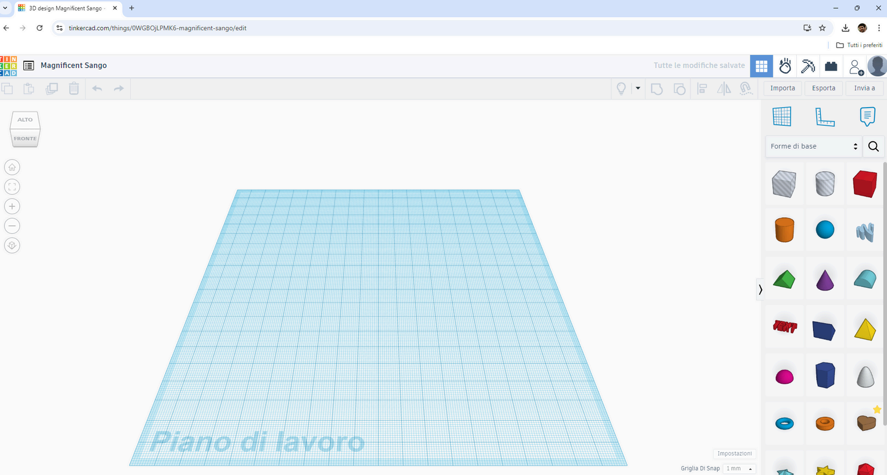
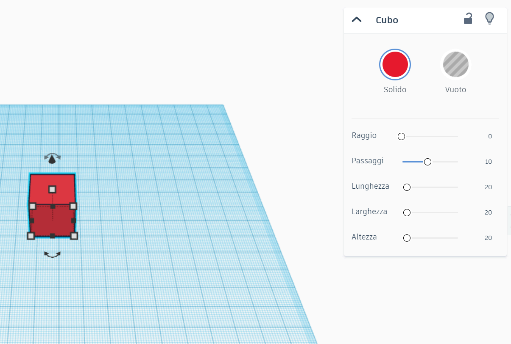
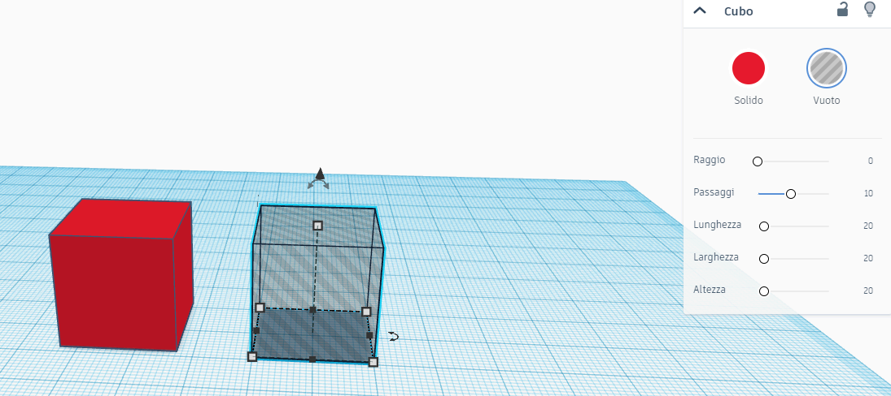
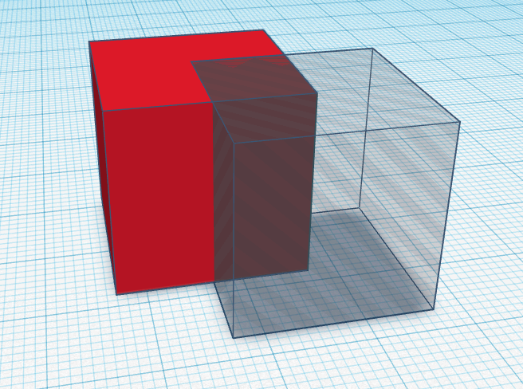

Modellazione
base
Workplane, camera, forme, snap, solidi e vuoti: le operazioni fondamentali in TinkerCAD.
La mappa dell’ambiente
L’interfaccia di TinkerCAD è volutamente minimale: tutto è in vista, senza menu nascosti. Prima di modellare conviene costruirsi una mappa mentale delle zone di lavoro: sapere dove sta ogni comando riduce il tempo perso a cercarlo e gli errori fatti di fretta.
Barra degli strumenti
In alto a sinistra: copia, incolla, duplica, elimina, annulla e ripristina. Annulla (Ctrl+Z) è il comando più prezioso per chi inizia: qualsiasi tentativo si può disfare, quindi sperimentare non costa nulla.
Pannello forme
La colonna a destra elenca gli oggetti da inserire: geometrie base, lettere e numeri 3D, componenti pre-costruiti. Ogni forma si trascina direttamente sul piano di lavoro al centro dello schermo.
Opzioni della forma
Selezionando un oggetto compare il suo pannello proprietà: dimensioni, colore, stato solido o vuoto e i parametri specifici della forma, come raggio, numero di lati o passi della scala.
Import, export e titolo
In alto a destra si importano modelli esterni e si esporta il proprio; in alto al centro c’è il nome del progetto: rinominalo subito, per ritrovarlo poi nella dashboard tra decine di «Copia di…».

Il piano di lavoro
Il workplane è la superficie quadrettata su cui si costruisce: funziona come un tavolo magnetico, e le forme trascinate vi si appoggiano restando allineate alla griglia. Tutte le posizioni e le altezze del modello si misurano a partire da questo piano.
Perché conta: un oggetto sollevato dal piano di pochi millimetri, invisibile da davanti, in stampa 3D diventa un pezzo «fluttuante» che fa fallire la stampa. Appoggiare bene le forme è la prima abitudine da costruire.
In pratica: le dimensioni della griglia si personalizzano da «Modifica griglia» in basso a destra; per un progetto da stampare, imposta il piano sulle misure reali del piatto della tua stampante.
Forma appoggiata al piano ✓ · forma sospesa nel vuoto ✗
Osservare il modello
La camera è il punto di vista da cui guardiamo la scena: si ruota attorno al modello, si avvicina e si allontana. In 3D nessuna singola inquadratura dice tutta la verità, perciò saper muovere la camera è importante quanto saper muovere le forme.
Cubo delle viste
In alto a sinistra: cliccando le facce del cubo (alto, fronte, lato, retro) la camera salta a viste standard. «Vista iniziale» riporta all’inquadratura di partenza; «Adatta alla selezione» (tasto F) centra l’oggetto scelto.
Vista prospettica
Simula l’occhio umano: gli oggetti lontani appaiono più piccoli. È la più naturale per lavorare e presentare il modello, ma distorce le proporzioni e può ingannare sugli allineamenti.
Vista ortogonale
Elimina la prospettiva: le linee parallele restano parallele e le misure si confrontano a colpo d’occhio. È la modalità tecnica per verificare allineamenti e proporzioni prima di unire o stampare.
In 3D non basta guardare da davanti: controlla sempre dall’alto per la profondità, dal lato per l’altezza e dal retro per le parti nascoste.
La griglia di snap
Lo snap vincola i movimenti al passo della griglia: trascinando una forma, questa «scatta» di quantità fisse invece di scivolare liberamente. È il motivo per cui in TinkerCAD gli allineamenti riescono anche senza mano ferma. Il passo si regola dal menu in basso a destra, e sceglierlo bene fa la differenza tra un modello ordinato e uno storto.
Passo grande
Con 5–10 mm i movimenti sono rapidi e le forme si dispongono in fretta. È il passo giusto per la fase iniziale, quando si abbozzano i blocchi principali del modello.
Passo piccolo
Con 0,5–1 mm si lavora di fino: incastri, spessori, dettagli. Più lento, ma accurato: è il passo della fase di rifinitura, quando ogni millimetro conta.
Snap disattivato
Impostando «Off» il movimento diventa libero: utile per posizionamenti particolari, ma rischioso perché si perdono gli allineamenti automatici. Riattivalo appena finito.
Il mouse come strumento
In un ambiente 3D il mouse non serve solo a cliccare: ogni pulsante controlla un movimento diverso, e la mano deve impararli fino a non doverci più pensare. Chi confonde i tasti finisce per spostare una forma quando voleva soltanto girare la vista.
seleziona, trascina e posiziona le forme; con Shift premuto aggiunge oggetti alla selezione
ruota la camera attorno alla scena senza toccare gli oggetti: è il gesto più usato di tutti
zoom avanti e indietro; tenuta premuta, sposta la vista lateralmente (pan) senza ruotarla
funziona, ma è impreciso nei trascinamenti lunghi: per modellare a lungo un mouse vero fa la differenza
Prima di modellare oggetti complessi, dedica cinque minuti a esercitarti solo con camera, zoom e selezione: è tempo guadagnato.
Costruire con forme semplici
Il pannello a destra è la cassetta degli attrezzi: geometrie di base, testo tridimensionale e componenti già pronti. La filosofia di TinkerCAD sta tutta qui: non si «scolpisce» mai un oggetto complicato in un pezzo unico, lo si ottiene accostando e combinando pezzi elementari.
Geometrie base
Box, cilindro, sfera, cuneo, toro, piramide: i mattoni di ogni progetto. Sono parametriche: raggio, numero di lati o gradini si regolano dal pannello proprietà anche dopo l’inserimento.
Testo 3D
Il generatore di testo crea scritte solide: digiti la parola, scegli il font e l’altezza, e ottieni lettere pronte da unire a una base. È lo strumento per targhette, insegne e portachiavi personalizzati.
Componenti pronti
Veicoli, animali, edifici e connettori già modellati: ottimi come punto di partenza o decorazione, ma meno modificabili delle geometrie base. Usali con misura, il progetto resta tuo.
Modificare una forma
Le forme di TinkerCAD sono parametriche: le misure si cambiano in qualsiasi momento senza ricominciare da zero, e ogni modifica si applica in tempo reale. Cliccando una forma compaiono le maniglie e il pannello proprietà: da lì passa tutto il lavoro di precisione.

RGB ed esadecimali
In TinkerCAD ogni forma ha un colore assegnabile liberamente. Il colore è uno strumento progettuale: aiuta a distinguere le parti del modello sullo schermo, ma non determina il colore dell'oggetto stampato in 3D, che dipende dal filamento usato nella stampante.
RGB
Il modello RGB usa tre canali additivi — rosso, verde, blu — ciascuno da 0 a 255. Combinandoli si ottiene qualsiasi colore: (255, 0, 0) è rosso puro, (0, 0, 0) è nero, (255, 255, 255) è bianco.
Hex
Il codice esadecimale rappresenta gli stessi tre canali RGB in due cifre ciascuno: #FF0000 corrisponde a (255, 0, 0). TinkerCAD accetta entrambi i formati, e molte palette di colori online usano il formato hex come standard.
Materiale
Il colore scelto in TinkerCAD resta visibile solo nella visualizzazione 3D digitale. Nella stampa FDM il colore dipende dai filamenti e dalla macchina: più colori possono richiedere cambi manuali, sistemi multi-materiale, più estrusori o post-lavorazione.
Solidi e vuoti
La modellazione per solidi e vuoti è il cuore di TinkerCAD: ogni forma può essere dichiarata solida o vuota, e il comando Raggruppa esegue l'operazione booleana che unisce o sottrae il materiale. Questa logica è semplice ma potentissima per costruire forme complesse.
Solido
Una forma impostata come solido rappresenta materiale fisico da aggiungere al modello. È lo stato predefinito di tutte le forme: box, cilindri, sfere partono sempre come solidi e contribuiscono al volume dell'oggetto finale.

Vuoto
Impostando una forma come vuoto — dall'icona nella barra destra — diventa trasparente in anteprima. Quando raggruppata con un solido, rimuove da esso il volume corrispondente: perfetta per creare fori, cave, incisioni e scanalature.
Sottrazione
Sovrapponendo un vuoto a un solido e raggruppandoli, il volume in comune sparisce: così nascono fori passanti, incisioni di testo, cave e incastri. Fai sporgere il vuoto leggermente oltre il solido, per ottenere un taglio pulito e completo.
I pieni sono numeri positivi, i vuoti numeri negativi: insieme costruiscono la forma finale. Ogni oggetto complesso è solo combinazione di queste due operazioni elementari.
Raggruppa e Separa
Dal semplice al complesso: il comando Raggruppa fonde più forme in un oggetto unico, che da quel momento si sposta, si ruota e si colora come un pezzo solo. Ed è un'operazione reversibile: Separa ripristina le forme originali quando serve tornare indietro.

Muovere sugli assi
Posizionare un oggetto nello spazio significa ragionare su tre assi: X (sinistra–destra), Y (avanti–indietro) e Z (su–giù). Un oggetto può sembrare perfettamente allineato guardando da davanti ed essere fuori posto in profondità: per questo i valori numerici valgono più dell'occhio.
Frecce della tastiera: spostano la forma selezionata di 1 mm alla volta lungo X e Y; con Shift premuto il passo diventa 10 mm. È il modo più controllato di rifinire una posizione.
Asse Z: la freccia nera sopra l'oggetto lo solleva o lo abbassa; attiva il «Righello» dal pannello del piano per vedere le coordinate esatte e digitare posizioni numeriche.
X larghezza · Y profondità · Z altezza dal piano
Ruotare senza perdersi
Selezionando una forma compaiono tre coppie di frecce curve, una per ciascun asse: ogni coppia ruota l'oggetto attorno a un asse diverso. Capire quale maniglia gira in quale senso è questione di pratica — e di camera messa nell'angolazione giusta.
Angoli precisi
Clicca la doppia freccia e digita il valore nel campo che compare: per oggetti simmetrici usa angoli regolari come 45°, 90° o 180°. Trascinando dentro il goniometro la rotazione scatta di 22,5°; trascinando fuori è libera, grado per grado.
Un asse alla volta
Per riorientare un pezzo evita rotazioni combinate a occhio: ruota attorno a un asse, controlla il risultato da più viste, poi passa all'asse successivo. Ricostruire l'orientamento perso costa più che procedere con ordine.
Maniglie nascoste
Se una freccia curva è coperta da un'altra forma o guarda dalla parte sbagliata, non insistere: ruota prima la camera e agisci dalla nuova angolazione. Cambia vista prima di cambiare oggetto.
Ruotando attorno a X o Y una parte della forma può finire sotto il workplane: dopo ogni rotazione premi D per riappoggiarla al piano.
Forma creata.
Workplane, camera e viste, snap, forme e misure, colori, solidi e vuoti, Raggruppa, assi e rotazione: le operazioni base ci sono tutte. Ora il modello può uscire da TinkerCAD: formati, esportazione, slicer e stampa 3D.